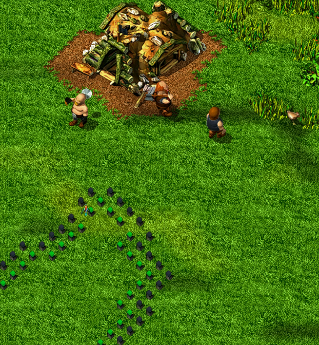
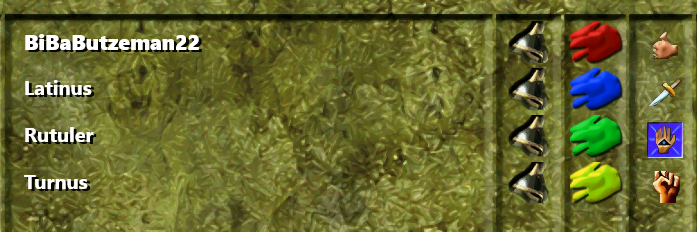

Back
Changelogs
Welcome to the Settlers 4 HD Patch changelog!
Overall changelog of the HD Patch:
HD Patch additions
- AI upscaled HD textures (units, buildings, ground, many more..)
- Widescreen main menu
- Improved text rendering
- HD ingame menu
- DirectX 11 rendering backend for improved color accuracy and FPS
- Real unit shadows (No checkerboard shadows)
- Improved (particle) effects
- New full color mouse cursor
- Texture pack support (to replace menus or other textures)
- Labels for buildings in the menu
HD Patch fixes
- Fixed wrong color of the stats. menu circle of the white player
- Fixed the selection icon of the last trojan beauty building which had a mayan building
- Fixed the selection icon of the maya iron mine which had a older mayan building
Known bugs/Missing features:
- Not all HDified cursors are implemented yet
- Tutorial assets (Arrows, chat) aren't correctly rendered
- Unit color not yet changeable in the in-game settings
Changelog Preview
Plugin Version
0.14.1 -> 0.15.0
Additions:
- Improved performance on systems with a NVIDIA gpu
- Added experimental support for v-sync and frame limiting
- Added new system to color individual textures - this enables the custom team color for elements like border stones, flags and the team ui elements

Fixes:
- Fixed possible CTD on startup on various systems
- Fixed build progress not correctly displaying for ships and war machines
Plugin Version
0.9.0-Beta -> 0.9.1-Beta
Additions:
- Added more cursors
Changelog 20.02.2022
Plugin Version
0.14.0 -> 0.14.1
Additions:
- Added option to disable the orange chat text color of game notifications
- Added C API to add your custom plugin settings to the main menu HD settings menu
Fixes:
- Fixed a possible CTD on startup
- Added error message when an unsupported GPU is being used
Changes:
- Crash handler now always shows the 'additional information' panel before sending a crash report
Changelog 14.02.2022
Installer Version
0.12.3 -> 0.12.4
Fixes:
- Fixed bug where the installer woulnd't correctly apply a delta patch when the base download was corrupt/missing
Changelog 13.02.2022
Plugin Version
0.13.1 -> 0.14.0
Additions:
- New crash reporting tool - this should help me help you with (voluntary) automatic crash report sending
- This is still very experimental, please report any bugs or error messages related to this!
- New and improved settings menu (WIP game settings added aswell - toggle audio settings directly in the main menu!)
- Automatic lite mode activation
- Added sounds for custom HD patch buttons
Fixes:
- Fixed rare CTD reason when skipping videos
- Possible fix for a CTD on some GPUs
- Fixed wrong settler team color mask calculation leading to misaligned colors on some viking settlers
- Fixed S4 not closing in a timely manner
- Videos that are not yet HD should now be visible (Bug: only sound when watching campaign videos)
Asset Version
0.8.1-Beta -> 0.9.0-Beta
Additions:
- Added old world ground textures
- Improved main menu visuals (New HD Patch logo and cleaner background image)
Fixes:
- Fixed shadows on dark tribe
Installer Version
0.9.2 -> 0.12.3
Additions:
- Added resumable downloads (even after closing the installer)
- Added delta patching support (if you already have a downloaded version installed and a delta patch is available, then you only download the much smaller delta)
Changelog 15.01.2022
Asset Version
0.8-Beta -> 0.8.1-Beta
Fixes:
- Added missing dark tribe texture
Open Beta Release 14.01.2022
Changelog 12.01.2022
Plugin Version
CLOSED BETA 0.13.1 -> OPEN BETA 0.13.3
Fixes:
- Fixed video flickering regression bug
- Fixed missing sprite behind game over ui element
- Fixed various ui bugs due to missing/broken clearing
- Fixed red lines on beaches on NVIDIA hardware
- Fixed tooltip hidden under minimap/miniview (also asset change)
Changelog 09.01.2022
Plugin Version
CLOSED BETA 0.11.3 -> CLOSED BETA 0.13.1
Additions:
- New lite mode for Intel HD/Xe, or GPUs with less than 2GB VRAM systems
- New settings menu in the main menu
- New credits menu in the main menu [kdsystem1337]
- New setting to disable the new selection box
- New subtle emboss effect for the minimap
- Added steps to f.o.w. levels (the deeper the object is in the f.o.w., the darker the object gets)
- New DX11 direct HWND rendering instead of the (legacy) S4 rendering
This change brings the following improvements:- Better overall FPS
- No more color banding due to RGB565 limitations
Changes:
- New FPS counter algorithm
- Changed language detection to use the game's language [kdsystem1337]
Fixes:
- Fixed music/sound setting slider and pinned slider clearing too much
- Fixed missing team colors on some units while in the f.o.w.
- Fixed black terrain flickering on first zoom out
- Fixed wrong terrain texture lines
- Fixed black line on right side of menu
- Fixed 2 button zoom wrongfully triggering the selection box draw
- Improved Non-HD -> HD mode change (no longer black terrain)
- Fixed wrong font color/style of unit/building selection menu header
- Fixed menu loading state showing wrong assets on the blackscreen [kdsystem1337]
Asset Version
CLOSED BETA 0.6-RC -> CLOSED BETA 0.7-RC
Additions:
- A new Settlers 3 inspired ingame UI was added (WIP and feedback is much appreciated!)
Changes:
- New, more discrete water waves
Fixes:
- Fixed double shadow (too black) of the roman and trojan lookout tower
- Fixed miniview background bleed on some tribe menus
- Fixed dots under all rome menu items
- Added missing chat backgrounds
- Removed broken shadow on 'pinned slider' [kdsystem1337]
Changelog 19.12.2021
Plugin Version
CLOSED BETA 0.11.2 -> CLOSED BETA 0.11.3
Additions:
- Added experimental support for DX 11.0 feature level
- Halved RAM usage of application
- Added background loading of the most important packages while in the menu
- Limited the package loader to stay within the RAM limits or else wait until space is free
Changes:
- Adapted AtlasGFXCollection to the .apak -> folder change (should improve loading times by ~35%)
Asset Version
CLOSED BETA 0.5-RC -> CLOSED BETA 0.6-RC
Additions:
- Embedded menu assets like the tree and flower into the background [kdsystem1337]
Fixes:
- Fixed the selection icon of the last trojan beauty building which had a mayan building (UBISOFT ERROR) [kdsystem1337]
- Fixed the selection icon of the maya iron mine which had a older mayan building (UBISOFT ERROR) [kdsystem1337]
Changes:
- Upgraded the ingame menu assets to a newer AI revision
- .apak files are now distributed as folders
Changelog 11.12.2021
Plugin Version
CLOSED BETA 0.11.1 -> CLOSED BETA 0.11.2
Additions:
- Added minimap camera rectangle
- BREAKING CHANGE Transitioned the language setting from "LANG-CULTURE" to just "LANG" ("de-DE" -> "de")
Fixes:
- Fixed non HD movies being overdrawn from the menu
- Fixed the missing color on vehicles
- Updated the wording on a few text elements [kdsystem1337]
- Updated the default color of purple and cyan to better match the original [kdsystem1337]
Asset Version
CLOSED BETA 0.4-RC -> CLOSED BETA 0.5-RC
Additions:
- Added the dark tribe vehicles
- Added motion blur to the dark tribe copters

Fixes:
- Fixed the wrong color of the team color circle on the stats. menu (UBISOFT ERROR) [kdsystem1337]
- Fixed wrong sizing of butterflies
- Removed old/unused files